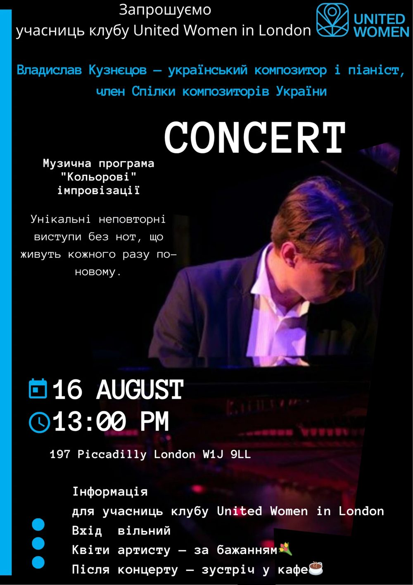

Концерт · 16 серпня · ЛондонConcert · 16 August · London
«Кольорові імпровізації»: концерт Владислава Кузнєцова“Colour Improvisations”: a concert by Vladyslav Kuznietsov
Український композитор і піаніст, член Спілки композиторів України, зіграв для учасниць клубу United Women in London неповторні імпровізації без нот. Після концерту — зустріч у кафе.The Ukrainian composer and pianist, a member of the National Union of Composers of Ukraine, played unique improvisations for members of the United Women in London club, followed by a café meet-up.